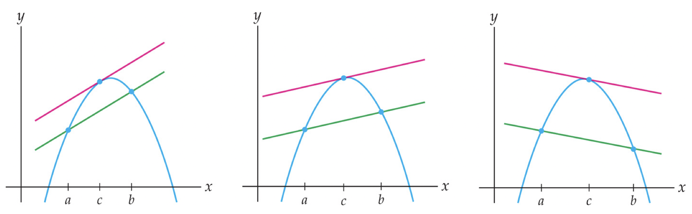
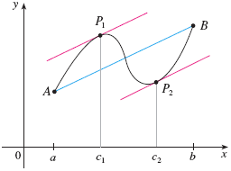
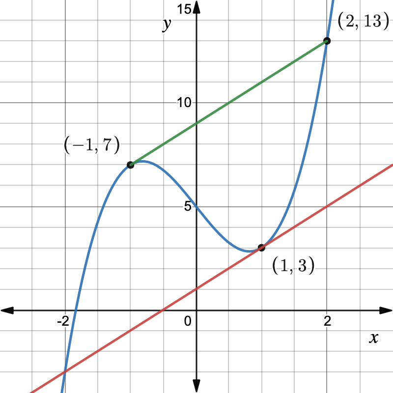
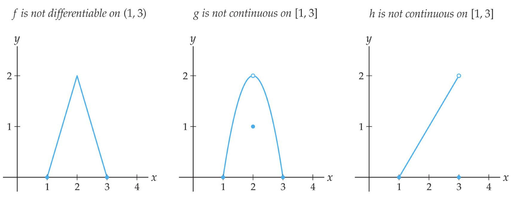
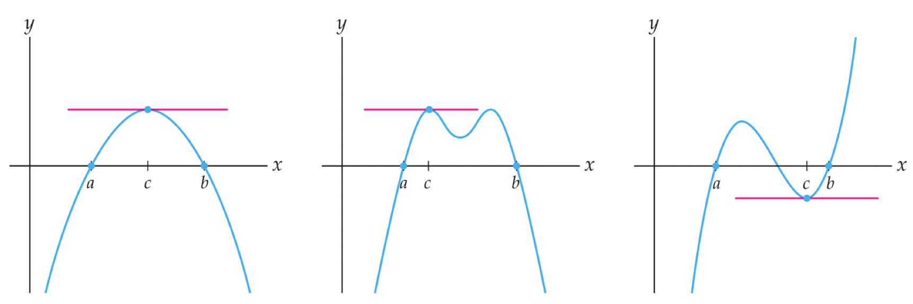
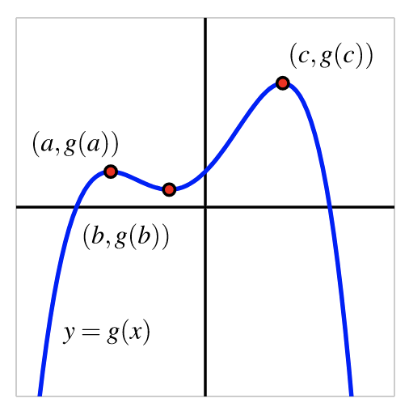
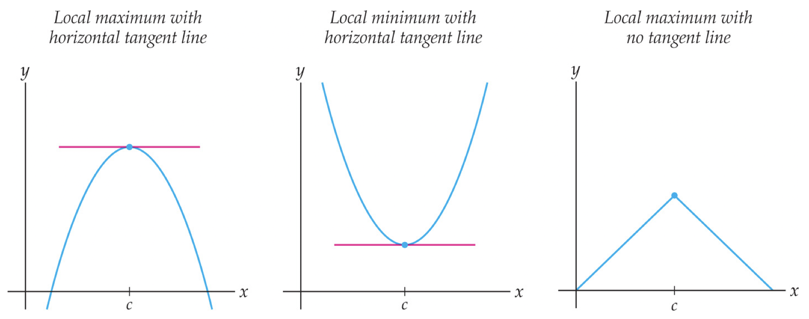
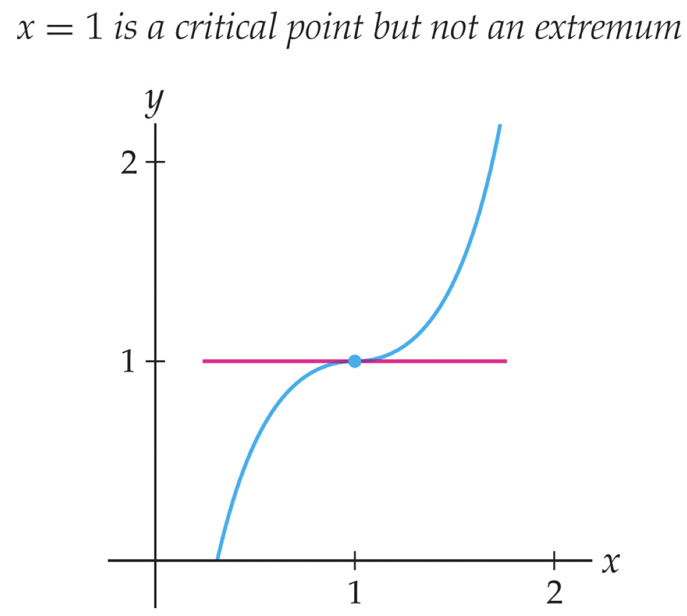
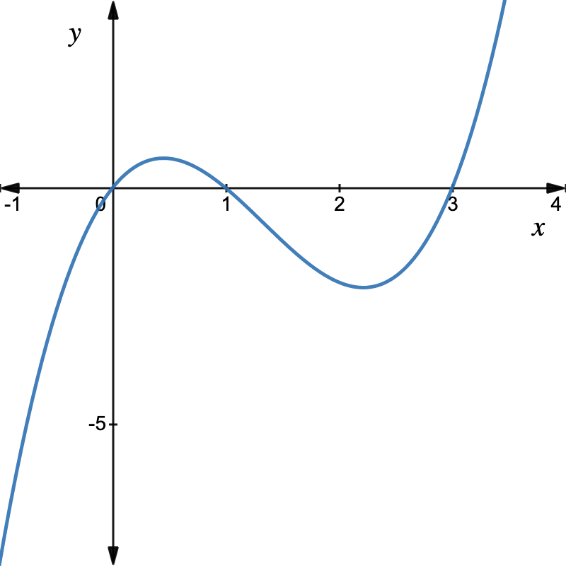

In your own words, explain how the average speed of a car on a stretch of road is different from the instantaneous speed of the car at a particular point on that road.
Section 5.3 The Mean Value Theorem and Critical Points
Subsection 5.3.1 Learning Goals
-
Explain the meaning of the Mean Value Theorem.
-
Understand why the hypotheses of the Mean Value Theorem are necessary for the conclusion of the theorem to be true.
-
Visualize the Mean Value Theorem in terms of secant and tangent lines.
-
The Mean Value Theorem implies that local extrema must occur at points where the derivative is equal to zero or is undefined.
Subsection 5.3.2 Real-World Motivation for the Mean Value Theorem
Let’s begin with a practical question: should the driver of the car photographed below be issued a speeding ticket?
The two cameras that took these images are located at a distance of 0.2 miles apart on this particular roadway, which has a speed limit of 70 mph. The times printed in the upper left hand corner of each image are (top photo) 12:03:52 and (bottom photo) 12:04:01 (in the format hours:minutes:seconds).
This means that it took the car 9 seconds to travel the 0.2 miles between cameras, so had an average speed of
\begin{equation*}
\frac{0.2\text{ miles } }{9\text{ seconds } } = \frac{1}{45} = 0.0\overline{2} \text{ miles per second }\text{.}
\end{equation*}
Converting this to a more standard unit of miles per hour, we multiply by \(60\times60 = 3600\,\frac{\text{ seconds } }{\text{ hour } }\text{:}\)
\begin{equation*}
\frac{1}{45} \,\frac{\text{ miles } }{\text{ second } }\times 3600\,\frac{\text{ seconds } }{\text{ hour } } = 80 \text{ miles per hour }\text{.}
\end{equation*}
The speed limit on this stretch of road is 70 mph, so this driver will get a speeding ticket.
What assumptions underly this decision? Here are a few observations about this: we calculated that the driver’s average speed was 80 mph, so we don’t actually know that they were going 80 mph the entire time. Intuitively, they were probably going faster sometimes and slower at other times, and so naturally at some point they must have been going exactly 80 mph.
Said using mathematical language, our intuition tells us that the driver’s instantaneous speed must have been 80 mph at some point, meaning that the derivative of the driver’s position function must have been equal to 80 mph at some point. We don’t know when precisely, but it must have been somewhere between the two cameras.
Intuitively and mathematically, this driver has no chance of getting out of the speeding ticket because of a very important theorem called the Mean Value Theorem.
Checkpoint 5.3.1.
Subsection 5.3.3 The Mean Value Theorem
The Mean Value Theorem states what we understand intuitively to be true for moving objects:
This intuition requires that the movement of that object is continuous (it cannot jump forward or backward) and that the movement is "smooth," meaning that the derivative should be defined everywhere. We state this theorem formally and then explain the details of the notation.
Theorem 5.3.2. The Mean Value Theorem.
If \(f\) is continuous on \([a,b]\) and differentiable on \((a,b)\text{,}\) then there exists at least one value \(x=c\) with \(a\lt c\lt b\) such that
\begin{equation*}
f'(c) = \frac{f(b)-f(a)}{b-a}
\end{equation*}
Let’s look at the right-hand side of the equation in Theorem Theorem 5.3.2. The "mean" in the "Mean Value Theorem" refers to an average, specifically the average rate of change of \(f\) on \([a,b]\text{:}\)
\begin{equation*}
AV_{[a,b]} = \frac{f(b)-f(a)}{b-a}
\end{equation*}
that we studied extensively in previous sections. Recall that we can visualize the average rate of change on an interval \([a,b]\) as the slope of the secant line between the points \((a,f(a))\) and \((b,f(b))\text{.}\)
The left-hand side of the equation in Theorem Theorem 5.3.2 is the derivative, which we remember is also called the instantaneous rate of change. We can visualize this as the slope of the tangent line at the point \((c,f(c))\text{.}\)
Visually, the Mean Value Theorem tells us that there is a tangent line at some point \(x=c\) that is parallel to the secant line through the points at \(x=a\) and \(x=b\text{,}\) as illustrated in the figures below:

There could in fact be several points \(x=c_1, c_2, \ldots\) where the tangent line is parallel to the secant line through the points at \(x=a\) and \(x=b\text{:}\)

In our example of the car going an average speed of 80 mph, it is very reasonable to believe that the car’s speed varied over the 0.2 miles and that there were quite a few points when the car was traveling exactly 80 mph. As in this example, the Mean Value Theorem does not tell us precisely where the instantaneous rate of change is equal to the average rate of change, simply that it must be equal somewhere. If we had an equation for the velocity of the car, of course, we could determine where precisely the velocity was equal to 80. In the examples that follow, since we have a function, we can find its derivative, and so solve for the value of \(c\) algebraically.
Example 5.3.3.
Verify that the function \(f(x) = 2x^3-4x+5\) satisfies the hypotheses of the Mean Value Theorem on the interval \([-1,2]\text{.}\) What does the conclusion of the Mean Value Theorem tell us?
Separately, find all numbers \(x=c\) that satisfy the conclusion of the Mean Value Theorem. Sketch the secant line between \((-1,f(-1))\) and \((2,f(2))\) along with the tangent line at the value \(x=c\) to check that they are indeed parallel.
Solution.
First, we check the hypotheses of the Mean Value Theorem: \(f(x)\) must be
-
continuous on \([-1,2]\) and
-
differentiable on \((-1,2)\)
Since \(f(x)\) is a polynomial (a type of algebraic function), it is continuous everywhere within its domain by Theorem 3.2.39. In particular, it is continuous on \([-1,2]\text{.}\)
\(f'(x) = 6x^2-4\) and this is defined for all \(x\)-values, so including on \((-1,2)\text{,}\) making \(f(x)\) differentiable on \((-1,2)\text{.}\)
1
Remember that "differentiable" means "able to take the derivative," so as long as the derivative is defined, a function is differentiable.
The conclusion of the Mean Value Theorem tells us:
\(x=c\)\(-1\lt c\lt 2\)
\begin{equation*}
f'(c) = \frac{f(2)-f(-1)}{2-(-1)}\text{.}
\end{equation*}
The Mean Value Theorem does not tell us what the value of \(c\) is, besides knowing that there must be one between \(x=-1\) and \(x=2\text{.}\) However, since we have a function for \(f(x)\text{,}\) we can find \(c\) explicitly.
First, we simplify \(\frac{f(2)-f(-1)}{2-(-1)}\text{.}\) Since \(f(2) = 2(2)^3-4(2)+5 = 13\) and \(f(-1) = 2(-1)^3-4(-1)+5 = 7\text{,}\) we have
\begin{equation*}
\frac{f(2)-f(-1)}{2-(-1)} = \frac{13-7}{2+1} = \frac{6}{3}=2\text{.}
\end{equation*}
Thus we are trying to find \(c\) with \(f'(c) = 2\text{.}\)
\begin{equation*}
\begin{aligned}f'(c) \amp = 2\\ 6c^2-4 \amp = 2\\ 6c^2 \amp = 6\\ c^2 \amp = 1\\ c \amp =\pm 1 \end{aligned}
\end{equation*}
Even though \(f'(1)=2\) and \(f'(-1)=2\text{,}\) we notice that the Mean Value Theorem specifies that \(-1\lt c\lt 2\text{,}\) and so only \(c=1\) satisfies the conclusion of the Mean Value Theorem on this particular interval.
\(f(x)\) is graphed below along with the secant line between \((-1,f(-1))\) and \((2,f(2))\) (in green) and the tangent line at \((1,f(1))\text{,}\) which are indeed parallel.

Checkpoint 5.3.4.
-
Verify that \(g(x) = \sqrt{x}\) is continuous on \([0,4]\) (by stating its domain) and differentiable on \((0,4)\) (by calculating the derivative \(g'(x)\) and stating its domain).
-
What does the Mean Value Theorem allow you to conclude?
-
Find all numbers \(x=c\) that satisfy the conclusion of the Mean Value Theorem on the interval \([0,4]\) by explicitly solving the equation \(g'(c) = \frac{g(4)-g(0)}{4-0}\text{.}\)
-
Sketch the graph of \(y=g(x) = \sqrt{x}\) and the secant line between \((0,g(0))\) and \((4,g(4))\text{,}\) along with the tangent line at the value \(x=c\) to check that they are indeed parallel.
Example 5.3.5. An Application of the Mean Value Theorem.
Two runners start a race at the same time and finish in a tie. We can use the Mean Value Theorem to show that at some time during the race, the two runners have the same speed.
Let \(s_1(t)\) be the position of the first runner, and let \(s_2(t)\) be the position of the second runner. If we let \(t=a\) denote the beginning of the race and \(t=b\) denote the end of the race, we translate the information given in the problem into \(s_1(a)=s_2(a)\) (the runners start a race at the same time) and \(s_1(b) = s_2(b)\) (the runners finish in a tie).
Let \(f(t) = s_1(t)-s_2(t)\) be the difference in the positions of the two runners. The runner’s position functions are both continuous on \([a,b]\) and differentiable on \((a,b)\text{,}\) so \(f(x)\) is also continuous on \([a,b]\) and differentiable on \((a,b)\) as a difference of continuous and differentiable functions. Hence we know \(f(x)\) satisfies the hypotheses of the Mean Value Theorem.
2
Position functions of moving objects are always continuous since objects cannot jump from one place to another. And since the runners must have some speed at every moment, the position functions are also differentiable.
Since \(s_1(a)=s_2(a)\) and \(s_1(b) = s_2(b)\text{,}\) we know that \(f(a)=s_1(a)-s_2(a)=0\) and \(f(b)=s_1(b)-s_2(b)=0\text{.}\) Thus the conclusion of the mean value theorem tells us
There exists at least one value \(x=c\) with \(a\lt c\lt b\) such that
\begin{equation*}
f'(c) = \frac{f(b)-f(a)}{b-a} = \frac{0-0}{b-a} = 0\text{.}
\end{equation*}
\(f'(t) = s_1'(t)-s_2'(t)\) and so we have some \(c\) with \(f'(c) = s_1'(c)-s_2'(c)=0\text{.}\) This tells us that \(s_1'(c)=s_2'(c)\text{,}\) meaning that the runners’ speeds are the same at \(t=c\text{,}\) which is exactly what we said we would show.
Subsection 5.3.4 The Hypotheses of the Mean Value Theorem are Important
If the driver of our speeding car could convince a judge that they were able to skip instantaneously from the first camera to the second, they would stand a chance of getting out of paying the speeding ticket, at least if the judge knows mathematics. If the hypotheses of the Mean Value Theorem are not satisfied (if the function is not continuous or not differentiable) then the conclusion does not have to be true.
Example 5.3.6. Non-Examples.
The functions in the pictures below are either not continuous or not differentiable at some point, and the conclusion of the Mean Value Theorem is false for all three:

For all three functions, \(f(1)=f(3)=0\) and so in the conclusion of the theorem, we would want to have
\begin{equation*}
f'(c) = \frac{f(3)-f(1)}{3-1} = \frac{0}{2} = 0\text{.}
\end{equation*}
Recall that points where \(f'(c)=0\) are where the tangent line is horizontal. None of the three graphs have a horizontal tangent line at any point, and so there is no \(x=c\) with \(f'(c)=0\text{.}\)
The function \(f\) in the left-most graph fails to be differentiable at \(x=2\text{,}\) and therefore can "turn around" at \(x=2\) without having a horizontal tangent line.
In the middle graph, the function \(g(x)\) fails to be continuous at the very place where we would have expected its derivative to be zero. Since this function is not continuous at \(x=2\text{,}\) it is also not differentiable at \(x=2\text{,}\) and \(g'(2)\) does not exist, so cannot be equal to 0.
The right-most graph illustrates a function \(h(x)\) that fails to be continuous at the right endpoint \(x=3\) of the interval. There is no value of \(c\) with \(h'(c)=0\text{;}\) the function never has to "turn around" since it just jumps down to the zero at \(x=3\text{.}\)
Checkpoint 5.3.7.
Draw an example of a function for which \(AV_{[1,3]} = -1\) but \(f'(c)\) is never equal to \(-1\) for any \(c\) with \(1\lt c\lt 3\text{.}\) Note: For this to be true, the hypotheses of the Mean Value Theorem must be false on \([1,3]\text{,}\) so the function must either fail to be continuous or differentiable at some point.
Subsection 5.3.5 Critical Points
The Mean Value Theorem is important for many theoretical reasons in mathematics. Our main use for this theorem will be in understanding the ways in which the graph of a function can have a local minimum or maximum.
Suppose a differentiable function has the same value at \(x=a\) and \(x=b\text{,}\) meaning that \(f(a)=f(b)\text{.}\) What does the Mean Value Theorem say about the graph of \(f\) between \(a\) and \(b\text{?}\) The three graphs that follow next provide a clue: if the graph of a function is smooth and unbroken, and if the function is not constant between \(x=a\) and \(x=b\text{,}\) then somewhere between \(x=a\) and \(x=b\) the function must turn around. The Mean Value Theorem tells us what we can see visually: there must be a point (or several points) between \(x=a\) and \(x=b\) where \(f'(c)=\frac{f(b)-f(a)}{b-a} = \frac{0}{b-a} = 0\text{,}\) since we are assuming that \(f(a)=f(b)\) so that \(f(b)-f(a)=0\text{.}\) In other words, \(f\) must have a horizontal tangent line, and the location \(x=c\) of that horizontal tangent is the turning point:

However, it may be the case that a continuous function can turn around without having a horizontal tangent line, as the pictures below illustrate. In this case, the function must either be discontinuous or not differentiable, so that the Mean Value Theorem does not apply.
These "turning points" are also called local extrema, since they are the largest or smallest (most extreme) points nearby (locally).
Definition 5.3.8. Local Extrema of a Function.
We say that \(f(c)\) is a local maximum or relative maximum of \(f\) provided that \(f(c)\geq f(x)\) for all \(x\) near \(c\text{.}\)
Similarly, \(f(c)\) is a local or relative minimum of \(f\) whenever \(f(c)\leq f(x)\) for all \(x\) near \(c\text{.}\)
Example 5.3.9.
For example, the function \(g(x)\) below has a local minimum, a.k.a. relative minimum, of \(g(b)\) at the point \((b,g(b))\) (the center red dot) and two relative maxima, one of \(g(a)\) at \(x=a\) and one of \(g(c)\) at \(x=c\text{.}\)

We would like to be able to find local minima and maxima of a function, and calculus provides us with the tools to do this. Of course, if we are given the graph of a function, it is often straightforward to locate these important behaviors visually. But how can we find them algebraically if we only have the formula that defines a function? The following graphs below give us a clue:

Intuitively, at a local minimum or maximum, the tangent line of a function must be either horizontal or undefined. If a continuous function has a relative maximum at \(x=c\text{,}\) then it must be that the function changes from being increasing just before \(c\) to decreasing just after \(c\text{.}\) A continuous function has a relative minimum at \(x=c\) if and only if the function changes from decreasing to increasing at \(c\text{.}\) Because of the Intermediate Value Theorem and Theorem 3.3.12, there are only two possible ways for these changes in behavior to occur: either \(f'(c)=0\) or \(f'(c)\) is undefined. Because these values of \(c\) are so important, we call them critical numbers or critical points.
Definition 5.3.10. Critical Points of a Function.
We say that a function \(f\) has a critical point at \(x=c\) provided that \(c\) is in the domain of \(f\text{,}\) and \(f'(c)=0\) or \(f'(c)\) is undefined.
Notice that only points in the domain of \(f\) are considered critical points.
Example 5.3.11.
For example, consider the function \(f(x) = \frac{1}{x}\text{,}\) whose derivative is \(f'(x) = -\frac{1}{x^2}\text{.}\) Clearly \(f'(0)\) does not exist; however, since \(x=0\) is not in the domain of \(f\text{,}\) it is not called a critical point.
The preceding graphs suggest that every local extremum must occur at a critical point. This seemingly obvious relationship between critical points and extrema turns out to be the foundation on which we will build our development of calculus:
Theorem 5.3.12. Local Extrema are Critical Points.
If \(x=c\) is the location of a local extremum of \(f\text{,}\) then \(x=c\) is a critical point of \(f\text{.}\)
\fbox{ The converse of Theorem Theorem 5.3.12 is not true. That is, not every critical point is a local extremum of \(f\text{.}\) Theorem 5.3.12 is also known as Fermat’s Theorem for Local Extrema when formulated equivalently as saying that if \(x=c\) is a local extremum and \(f\) is differentiable at \(x=c\text{,}\) then \(f'(c)\) must be zero. }
Example 5.3.13. Not every critical point is a local extremum.
The function \(f(x) = x^3-3x^2+3x\) has derivative \(f'(x) = 3x^2-6x+3\text{.}\) In order to find the critical points of \(f\text{,}\) we set this derivative equal to 0 and solve (by factoring).
\begin{equation*}
f'(x) = 3x^2-6x+3 = 3(x^2-2x+1) = 3(x-1)(x-1) = 0
\end{equation*}
when \(x=1\text{.}\) Note that since \(f\) is a polynomial, \(f'\) is also a polynomial and so is defined everywhere, thus there are no critical points where \(f'\) undefined.
However, looking at the following graph of \(f\text{,}\) we can see that \(f\) has neither a local minimum nor a local maximum at \(x=1\text{:}\)

Example 5.3.14.
The critical points of the function \(f(x) = \sqrt{x-2}\) are the points in the domain of \(f\) where \(f'(x)=0\) or is undefined. The domain of \(f\) is \(x-2\geq 0\text{,}\) or \(x\geq 2\text{.}\)
\begin{equation*}
f'(x) = \frac{1}{2}(x-2)^{-1/2} = \frac{1}{2\sqrt{x-2}}
\end{equation*}
Since the numerator of this expression cannot be equal to 0, \(f'(x)\neq 0\) for any \(x\text{.}\) On the other hand, the denominator can be 0, making \(f'(x)\) undefined:
\begin{equation*}
2\sqrt{x-2}=0 \Leftrightarrow x-2=0 \Leftrightarrow x=2
\end{equation*}
and since \(x=2\) is in the domain of \(f\text{,}\) it is a critical point.
Example 5.3.15.
The function \(f(x) = x^3-4x^2+3x\) has two critical points since \(f'(x) = 3x^2-8x+3 = 0\) when
\begin{equation*}
x=\frac{-(-8)\pm\sqrt{8^2-4(3)(3)}}{2(3)} = \frac{8\pm\sqrt{28}}{6} \approx 0.451, 2.215\text{.}
\end{equation*}
If we look at the graph of \(f(x)\text{,}\) then we can see that the smaller of these two \(x\)-values is the location of a local maximum and the larger is the location of a local minimum:

Checkpoint 5.3.16.
If \(f\) has a local maximum at \(x=1\text{,}\) then what can you say about \(f'(1)\text{?}\) What if you also know that \(f\) is differentiable?
Subsection 5.3.6 Summary
The following terms and theorems were introduced in this section:
Key ideas: The Mean Value Theorem tells us that a continuous and differentiable function must have a point within an interval where the instantaneous rate of change is equal to the average rate of change on the interval. The theorem does not tell us exactly where that point is, but we can calculate it separately by setting the derivative equal to the average rate of change on the interval and solving for \(x\text{.}\) The Mean Value Theorem allows us to conclude that local extrema (minimum or maximum values) must occur at critical points, meaning where the derivative is zero or undefined.
Other ideas reinforced/introduced: Algebraic functions are continuous on their domains, and differentiable on the domain of their derivative. Average rates of change can be visualized as slopes of secant lines. Instantaneous rates of change can be visualized as slopes of tangent lines. Horizontal tangent lines occur where the derivative is equal to zero. A continuous function has a local minimum where the derivative changes from negative to positive, and a local maximum where the derivative changes from positive to negative.
\fbox{\fbox{ End of Section 4.3}}
\rule{1.1\textwidth}{2pt}